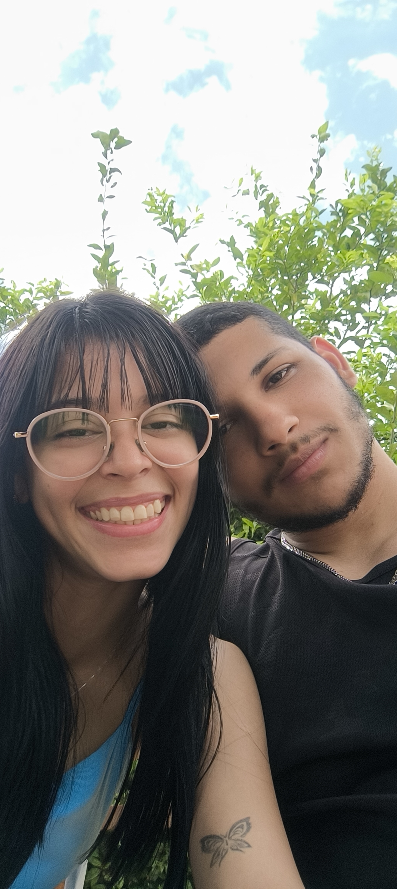

💖 Carregando nosso contador...
Nossa história começou de forma tão inesperada… Tudo começou com uma conversa simples, eu tentando te chamar para sair e você não querendo, kkk. Eu insistindo para irmos assistir Karatê Kid no cinema… e, no final, consegui marcar um dia para nos encontrarmos. Nosso primeiro encontro foi mágico. Surgiu uma conexão que eu não esperava, algo tão especial que parecia que já estava escrito para acontecer. No final daquele dia ainda tivemos aquele acidente com a moto… você se culpou, mas nunca foi culpa sua. Foi apenas consequência de alguém que estava bêbado. Mas enfim… vamos voltar para a nossa história. Mesmo em pouco tempo, já passamos por altos e baixos. E, com tudo isso, crescemos muito. Aprendemos muito um com o outro, aprendemos a ter mais paciência, a entender nossas diferenças e, principalmente, a valorizar ainda mais o que sentimos. A cada dia que passa, eu amo mais você. Estar ao seu lado ilumina meus dias e enche minha vida de alegria. Sem você, tudo perde um pouco do sentido. Às vezes você fica insegura, começa a apontar defeitos em si mesma e acha que não é merecedora de mim. Mas deixa eu te dizer algo com toda certeza do meu coração: EU TE AMO. Você é única nos meus olhos, no meu coração e nos meus pensamentos. Eu me dedico completamente a você. Nunca pense que não me merece, porque, na verdade, você merece muito mais do que eu talvez consiga te dar. E por isso eu agradeço todos os dias por você me escolher, por me apoiar e por estar ao meu lado. Às vezes posso parecer chato quando falo da sua saúde, mas é porque, para mim, você é preciosa como um rubi, valiosa como um diamante e delicada como um jasmim. Amar você é doce como chocolate, fofo como um panda e tão bonito quanto um pôr do sol. Bom, minha vida… Eu preparei essa surpresa para o nosso aniversário de 1 ano, mas não aguentei e acabei te contando antes, kkk. Corri um pouco para deixar tudo pronto e bonito, para tentar transmitir pelo menos uma parte de tudo que sinto por você. Talvez a única coisa que eu realmente saiba fazer bem com as mãos seja programar… ou escrever textos, poemas e músicas. Então pensei: por que não juntar tudo isso e fazer algo especial para você? Espero muito que você goste. Agora você pode ir na galeria, ver os vídeos… ou, se ainda não cansou de ler, pode ir até a biblioteca e encontrar mais alguns poemas. Fiz tudo isso com muito carinho. E me desculpa por esconder as noites mal dormidas… mas foi por um bom motivo: preparar essa surpresa para você. EU TE AMO MUITOOOOO!!! ❤️